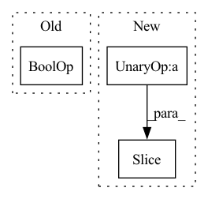

Pattern ID :12585
Before Change
terminal = done or timeout
epoch_ended = env_step == self.num_env_steps_per_epoch - 1
if terminal or epoch_ended:
if timeout or epoch_ended :
// bootstrap
last_v = self.agent.estimate_value(obs)
else:After Change
sample_used_time = time() - sample_start_time
log_infos["times/sample"] = sample_used_time
log_infos["performance/train_return"] = np.mean(train_traj_returns[-num_sampled_trajs:])
log_infos["performance/train_length"] = np.mean(train_traj_lengths[-num_sampled_trajs: ])
//train agent
train_agent_start_time = time()In pattern: SUPERPATTERN
Frequency: 3
Non-data size: 3
Instances Fragment ID: 42764957
Project Name: x35f/unstable_baselines
Commit Name: 4f0036392d4f35e65516efa47407b0cfbe05eb81
Time: 2023-01-16
Author: 1621322691@qq.com
File Name: unstable_baselines/baselines/ppo/trainer.py
M Class Name: PPOTrainer
N Class Name: PPOTrainer
M Method Name: train(1)
N Method Name: train(1)
M Parent Class: BaseTrainer
N Parent Class: BaseTrainer
M File Name: unstable_baselines/baselines/ppo/trainer.py
N File Name: unstable_baselines/baselines/ppo/trainer.py
M Start Line: 26
M End Line: 72
N Start Line: 27
N End Line: 80
Before Change
results = []
for i in range(num_tasks):
// Skip if all targets are identical
if all(target == 0 for target in valid_targets[i]) or all(target == 1 for target in valid_targets[i]) :
continue
results.append(metric_func(valid_targets[i], valid_preds[i]))
After Change
results.append(metric_func(valid_targets[i], valid_preds[i]))
if args.predict_features_and_task:
results = results[:-args.features_size ] + [np.mean(results[args.features_size:])]
return results
Fragment ID: 42764959
Project Name: aamini/chemprop
Commit Name: 30cb14a76ffed6585f0baa2638ced6e141727324
Time: 2018-12-18
Author: yangk@mit.edu
File Name: chemprop/train/evaluate.py
M Class Name: AnonimousClass
N Class Name: AnonimousClass
M Method Name: evaluate_predictions(4)
N Method Name: evaluate_predictions(4)
M Parent Class:
N Parent Class:
M File Name: chemprop/train/evaluate.py
N File Name: chemprop/train/evaluate.py
M Start Line: 44
M End Line: 63
N Start Line: 66
N End Line: 69
Before Change
mask = [np.array(ii)[0].mean(0) for ii in attn_scores][::-1]
cum_mask = [matmul_prod(mask[: ii + 1]).mean(0) for ii in range(len(mask))]
mask = [ii.mean(0) for ii in mask]
elif check_type_is("bot") or check_type_is("coatnet") :
// bot attn_score [batch, num_heads, hh * ww, hh * ww]
print(">>>> Attention type: bot / coatnet")
mask = [np.array(ii)[0].mean((0)) for ii in attn_scores if len(ii.shape) == 4][::-1]After Change
print(">>>> Attention type: coatnet")
mask = [np.array(ii)[0].mean((0)) for ii in attn_scores if len(ii.shape) == 4][::-1]
cum_mask = [mask[0]] + [down_sample_matrix_axis_0(mask[ii], mask[ii - 1].shape[1], "max") for ii in range(1, len(mask))]
cum_mask = [matmul_prod(cum_mask[: ii + 1 ]).max(0) for ii in range(len(cum_mask))]
mask = [ii.max(0) for ii in mask]
elif check_type_is("halo"):
// halo attn_score [batch, num_heads, hh, ww, query_block * query_block, kv_kernel * kv_kernel] Fragment ID: 42764960
Project Name: leondgarse/keras_cv_attention_models
Commit Name: e9f47afc799618ba61952db4bf9d679fbcc664cc
Time: 2021-12-27
Author: leondgarse@gmail.com
File Name: keras_cv_attention_models/visualizing/visualizing.py
M Class Name: AnonimousClass
N Class Name: AnonimousClass
M Method Name: plot_attention_score_maps(6)
N Method Name: plot_attention_score_maps(6)
M Parent Class:
N Parent Class:
M File Name: keras_cv_attention_models/visualizing/visualizing.py
N File Name: keras_cv_attention_models/visualizing/visualizing.py
M Start Line: 269
M End Line: 281
N Start Line: 268
N End Line: 283